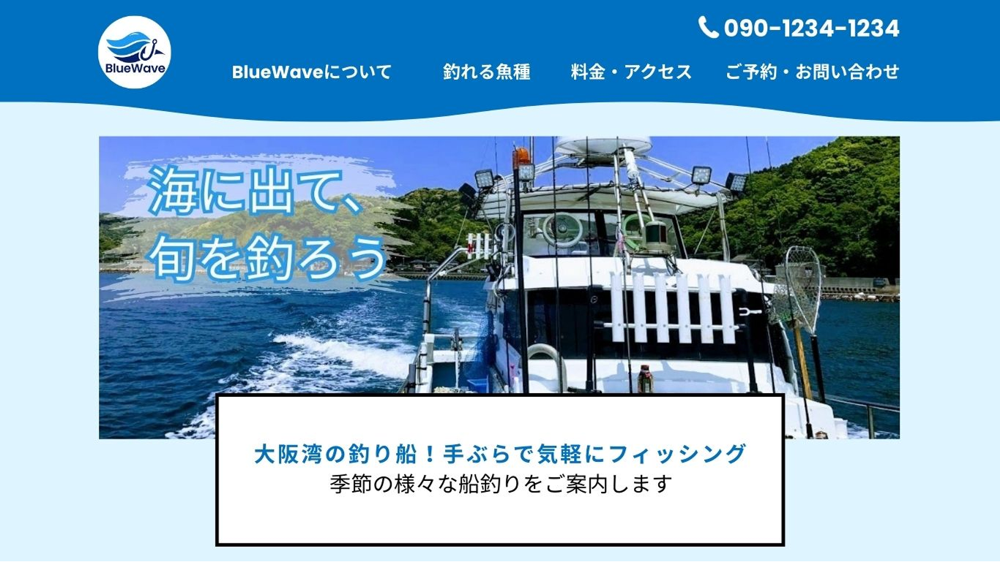
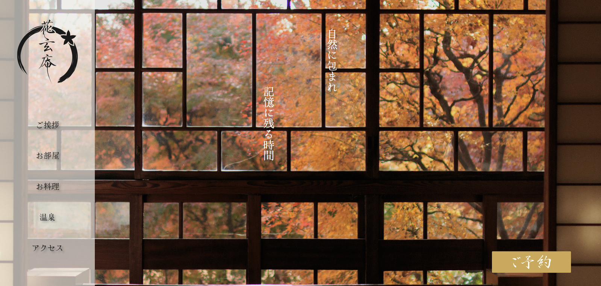

使用技術：HTML / CSS / jQuery / javaScript
レスポンシブ対応
制作期間：ワイヤー2日 / デザイン 2日 / コーディング 5日
仕様したツール：Photoshop / illustrator / VisualStudioCode

サイトを見る
使用技術：HTML / CSS / jQuery / javaScript
レスポンシブ対応
制作期間：ワイヤー3日 / デザイン 2日 / コーディング 9日
仕様したツール：figma / Canva / VisualStudioCode

サイトを見る